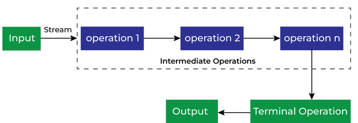
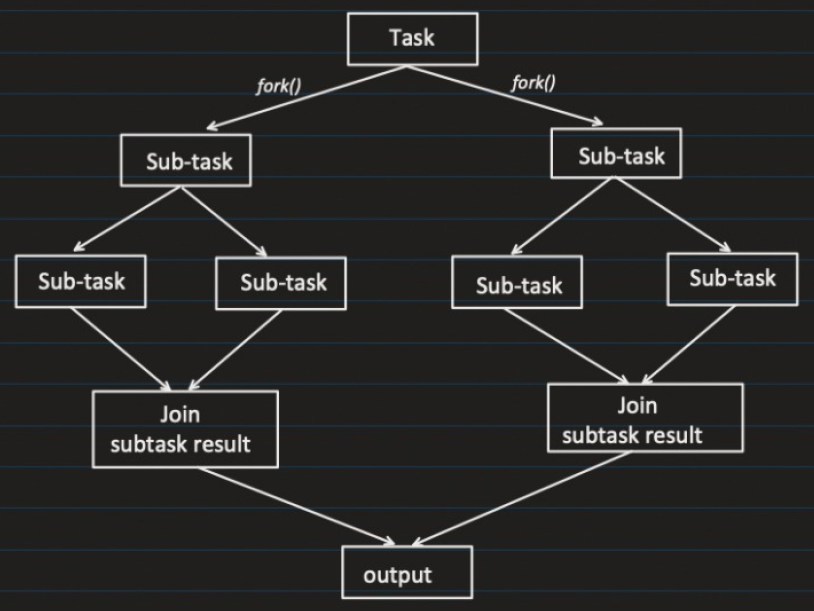

Streams
What is Stream?
- We can consider Stream as a pipeline, through which our collection elements passes through.
- While elements passes through pipelines, it perform various operations like sorting, filtering etc.
- Useful when deals with bulk processing. (can do parallel processing)

Example:
- Without streams:
Java
public class StreamExample {
public static void main(String args[]) {
List<Integer> salaryList = new ArrayList<>();
salaryList.add(3000);
salaryList.add(4100);
salaryList.add(9000);
salaryList.add(1000);
salaryList.add(3500);
int count = 0;
for (Integer salary : salaryList) {
if (salary > 3000) {
count++;
}
}
System.out.println("Total Employee with salary > 3000: " + count);
}
}- Using streams:
Java
public class StreamExample {
public static void main(String args[]) {
List<Integer> salaryList = new ArrayList<>();
salaryList.add(3000);
salaryList.add(4100);
salaryList.add(9000);
salaryList.add(1000);
salaryList.add(3500);
long output = salaryList.stream()
.filter(sal -> sal > 3000)
.count();
System.out.println("Total Employee with salary > 3000: " + output);
}
}Different ways to create stream:
- From Collection:
Java
List<Integer> salaryList = Arrays.asList(3000,5000,2000,6000,1000);
Stream<Integer> integerStream = salaryList.stream();- From Array:
Java
int[] salaryArr = {3000, 5000, 2000, 6000, 1000};
Stream<Integer> integerStream = Arrays.stream(salaryArr).boxed();Note: .boxed() is used to convert a primitive stream into a Stream of wrapper objects.
In simple words:
Before .boxed() | After .boxed() |
|---|---|
IntStream | Stream<Integer> |
DoubleStream | Stream<Double> |
LongStream | Stream<Long> |
- From static method:
Java
Stream<Integer> integerStream1 = Stream.of(3000, 5000, 2000, 6000, 1000);How many times can we use a single stream?
- Once terminal operation is used on a stream, it is closed/consumed and can not be used again for another terminal operation.
Intermediate operations:
- We can chain multiple intermediate operations together to perform complex processing before applying terminal operation to produce the result.
- Intermediate operations in Java Streams are lazy. They are only executed when a terminal operation is triggered.
Java
List<Integer> list = List.of(1, 2, 3, 4, 5);
list.stream()
.filter(n -> {
System.out.println("Filtering: " + n);
return n > 2;
});Nothing will be printed. Because there is no terminal operation like toList(), forEach() etc.
Java
list.stream()
.filter(n -> {
System.out.println("Filtering: " + n);
return n > 2;
})
.toList();Output:
diagram
Filtering: 1
Filtering: 2
Filtering: 3
Filtering: 4
Filtering: 5- Streams don’t process all data step-by-step like loops. Instead, they process one element through the entire pipeline.
Java
list.stream()
.filter(n -> {
System.out.println("filter: " + n);
return n > 2;
})
.map(n -> {
System.out.println("map: " + n);
return n * 2;
})
.toList();Output:
diagram
filter: 1
filter: 2
filter: 3
map: 3
filter: 4
map: 4
filter: 5
map: 5Notice:
- map() is NOT called for 1, 2 (filtered out)
- Processing is lazy + optimized
Important coding questions:
- Filter elements
Java
List<Integer> list = List.of(10, 15, 20, 25, 30);
List<Integer> result = list.stream()
.filter(n -> n > 20)
.toList();
System.out.println(result); // [25, 30]- Find even numbers
Java
List<Integer> even = list.stream()
.filter(n -> n % 2 == 0)
.toList();- Count elements
Java
long count = list.stream()
.filter(n -> n > 20)
.count();- Find max / min
Java
int max = list.stream().max(Integer::compare).get();
int min = list.stream().min(Integer::compare).get();- Remove duplicates
Java
List<Integer> unique = list.stream()
.distinct()
.toList();- Sort list
Java
List<Integer> sorted = list.stream()
.sorted()
.toList();
// Reverse sort
List<Integer> desc = list.stream()
.sorted((a, b) -> b - a)
.toList();- Map (transform elements)
Java
List<Integer> squares = list.stream()
.map(n -> n * n)
.toList();- Convert list of objects to another list
Java
List<String> names = employees.stream()
.map(emp -> emp.getName())
.toList();- Find first element
Java
Optional<Integer> first = list.stream()
.findFirst();- Any match / all match
Java
boolean anyEven = list.stream().anyMatch(n -> n % 2 == 0);
boolean allEven = list.stream().allMatch(n -> n % 2 == 0);- Grouping
Java
List<Integer> list = Arrays.asList(3000, 5000, 2000, 6000, 1000, 5555, 7777);
Map<Integer, List<Integer>> grouped =
list.stream()
.collect(Collectors.groupingBy(n -> n % 2));
System.out.println(grouped); // {0=[3000, 5000, 2000, 6000, 1000], 1=[5555, 7777]}Internal Working:
diagram
Create empty Map
For each element:
key = n % 2
Put element into map[key]- Count by grouping
Java
List<Integer> list = Arrays.asList(3000, 5000, 2000, 6000, 1000, 5555, 7777, 2000, 5000);
Map<Integer, Long> countMap =
list.stream()
.collect(Collectors.groupingBy(n -> n, Collectors.counting()));
System.out.println(countMap); // {6000=1, 2000=2, 7777=1, 5555=1, 1000=1, 5000=2, 3000=1}- Find duplicates
Java
public static void main(String[] args) {
List<Integer> list = Arrays.asList(3000, 5000, 2000, 6000, 1000, 5555, 7777, 2000, 5000);
Set<Integer> seen = new HashSet<>();
Set<Integer> dup = list.stream()
.filter(n -> !seen.add(n))
.collect(Collectors.toSet());
System.out.println(seen); // [2000, 6000, 7777, 5555, 3000, 5000, 1000]
System.out.println(dup); // [2000, 5000]
}- Sum of elements
Java
int sum = list.stream()
.mapToInt(Integer::intValue)
.sum();- Average
Java
double avg = list.stream()
.mapToInt(Integer::intValue)
.average()
.getAsDouble();- Flatten list of lists
Java
List<List<Integer>> nested = List.of(
List.of(1, 2),
List.of(3, 4)
);
List<Integer> flat = nested.stream()
.flatMap(List::stream)
.toList();- Convert List → Map
Java
public static void main(String[] args) {
List<Integer> list = Arrays.asList(1, 2, 4, 6, 3, 55, 31);
Map<Integer, Integer> map = list.stream()
.collect(Collectors.toMap(n -> n, n -> n * n));
System.out.println(map); // {1=1, 2=4, 3=9, 4=16, 6=36, 55=3025, 31=961}
}- Find second highest number
Java
int secondMax = list.stream()
.sorted((a, b) -> b - a)
.skip(1)
.findFirst()
.get();- String operations
Java
public static void main(String[] args) {
String str = "hello";
Map<Character, Long> freq =
str.chars()
.mapToObj(c -> (char) c)
.collect(Collectors.groupingBy(c -> c, Collectors.counting()));
System.out.println(freq); // {e=1, h=1, l=2, o=1}
}- Find first non-repeating character
Java
Character result = str.chars()
.mapToObj(c -> (char) c)
.collect(Collectors.groupingBy(c -> c, LinkedHashMap::new, Collectors.counting()))
.entrySet().stream()
.filter(e -> e.getValue() == 1)
.map(Map.Entry::getKey)
.findFirst()
.get();- Sort list of objects
Java
employees.stream()
.sorted(Comparator.comparing(Employee::getSalary))
.toList();- Top N elements
Java
List<Integer> top3 = list.stream()
.sorted((a, b) -> b - a)
.limit(3)
.toList();- Partitioning (even/odd)
Java
public static void main(String[] args) {
List<Integer> list = Arrays.asList(1, 2, 4, 6, 3, 55, 31);
Map<Boolean, List<Integer>> partition =
list.stream()
.collect(Collectors.partitioningBy(n -> n % 2 == 0));
System.out.println(partition); // {false=[1, 3, 55, 31], true=[2, 4, 6]}
}- Joining strings
Java
String result = list.stream()
.map(String::valueOf)
.collect(Collectors.joining(", "));- Parallel stream
Java
list.parallelStream()
.forEach(System.out::println);parallelStream()allows a stream to process elements in parallel using multiple threads- Uses ForkJoinPool (common pool)
- Splits data into multiple chunks
- Each chunk is processed by a different thread
- Results are combined at the end
- Order is NOT guaranteed
- To maintain the order use (but it is slow):
Java
list.parallelStream()
.forEachOrdered(System.out::println);